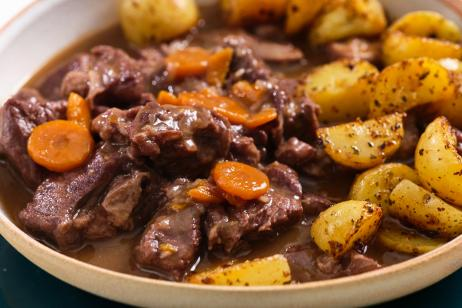

Pasos
-
1
Preparación de ingredientes
 2
2
Añadimos sal, pimienta blanca u otros condimentos según el gusto, y removemos uniformemente.
-
3
Cubra la carne con harina, sacudiendo el exceso si puede, luego colóquela en la sartén y fría hasta que se dore.
-
4
Añadimos nuestras verduras: zanahoria, cebolla… (añadir según gusto) al aceite en el que freímos la carne.
-
5
Una vez salteadas las verduras hasta que estén blandas, añadimos nuestra carne.
-
6
Una vez que nuestra carne empiece a ponerse un poco roja, añadimos nuestro vino.
-
7
Esperamos unos minutos y luego añadimos nuestro caldo para que nuestra carne tenga aún más sabor.
-
8
Lo ponemos a fuego medio-bajo y dejamos cocer a fuego lento durante una hora y media o dos horas aproximadamente. Durante este periodo tenemos que darle la vuelta de vez en cuando.
-
9
También podemos acompañarlo con unas patatas, una combinación de carne y verduras, que resulta nutritiva y deliciosa.
-

10
Producto terminado